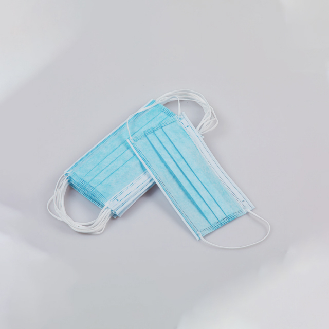

Why Infection Control Product Selection Matters
Infection prevention is the cornerstone of patient safety in every healthcare setting. Yet, selecting the right infection control products is far more complex than simply choosing the most expensive option on the catalog. The right choice depends on your facility's risk profile, applicable regulations, staff workflow, and budget constraints.
Healthcare-associated infections (HAIs) affect millions of patients globally each year, adding billions to healthcare costs. The World Health Organization estimates that proper use of personal protective equipment (PPE) can reduce infection transmission rates by up to 70%. This makes product selection not just a procurement decision — but a clinical one.
Assessing Your Facility's Risk Level
Before purchasing infection control products, categorize your operational environments by risk level. This determines the level of protection required.
🔴 High Risk
- Operating rooms
- Isolation wards
- ICUs & emergency departments
- Aerosol-generating procedures
🟡 Medium Risk
- General patient wards
- Outpatient clinics
- Diagnostic imaging rooms
- Rehabilitation centers
🟢 Low Risk
- Administrative offices
- Home care settings
- Nursing home common areas
- Transport & logistics
Core Infection Control Products: A Buyer's Breakdown
Newrise Medical's infection control product line covers the essential categories that every healthcare facility needs. Here's how to evaluate each product type:
Disposable Medical Face Masks
A disposable medical face mask is the most basic yet most critical PPE item. When sourcing, consider these specifications:
- Filtration efficiency (BFE/PFE): ≥95% for surgical use, ≥98% for N95-grade protection
- Layers: 3-ply standard (SMS non-woven + meltblown filter + inner comfort layer)
- Fit: Adjustable nose bridge, elastic ear loops or tie-on styles for extended wear
- Certification: ASTM F2100 (US), EN 14683 (EU), or equivalent standards
For high-risk environments, consider adding N95/FFP2 respirators for aerosol-generating procedures. For general wards and clinics, a standard surgical disposable medical face mask from a certified manufacturer provides adequate protection at a fraction of the cost.
Isolation Gowns
Isolation gowns provide body and arm protection during patient care activities. Selection criteria include:
- Material: Non-woven PP, SMS, or microporous film laminate
- Fluid resistance: AAMI Level 1 (minimal) through Level 4 (surgical)
- Closure type: Knit cuffs with thumb loops, Velcro or tie closures
- Size range: Ensure availability across XS–XXXL for proper coverage
Protective Face Shields
A protective face shield provides full-face coverage against splashes, sprays, and respiratory droplets. Key features to evaluate:
- Anti-fog coating: Essential for extended wear in humid environments
- Optical clarity: Distortion-free viewing for procedures requiring precision
- Headband comfort: Adjustable elastic or foam-padded bands reduce fatigue
- Compatibility: Should fit over prescription glasses and face masks simultaneously
Newrise Medical's face shields feature anti-fog PET film and an adjustable headband design, making them suitable for both clinical procedures and general patient care interactions.
PE Aprons
For tasks requiring basic fluid protection without the weight or cost of a full gown, a PE apron is an economical choice. These polyethylene aprons are:
- Lightweight and easy to don/doff quickly
- Ideal for patient feeding, basic nursing care, and environmental cleaning
- Available in various thicknesses (0.018mm–0.035mm) based on fluid exposure risk
- Cost-effective for high-consumption environments
While a PE apron doesn't replace an isolation gown for high-risk procedures, it serves as an excellent supplemental barrier for routine care tasks where full-body protection isn't required.
Regulatory Requirements by Region
Understanding which certifications your products need is essential for both compliance and market access:
| Region | Key Certifications | Applicable Standards |
|---|---|---|
| United States | FDA Registration, ASTM | ASTM F2100 (masks), AAMI PB70 (gowns) |
| European Union | CE Marking | EN 14683 (masks), EN 13795 (surgical drapes/gowns) |
| International | ISO 13485 | Quality management for medical device manufacturers |
Newrise Medical manufactures all infection control products in our ISO 13485-certified facility with full CE and FDA registration, ensuring our products meet the regulatory requirements of major global markets.
Budget Considerations: Quality vs. Cost
Procurement managers face constant pressure to reduce costs without compromising patient safety. Here's how to optimize your infection control budget:
- Match protection level to risk. Don't over-specify — using surgical gowns for low-risk tasks wastes budget. Conversely, under-specifying in high-risk areas increases infection costs that far exceed PPE savings.
- Consolidate suppliers. Working with a single manufacturer like Newrise Medical for multiple product categories reduces logistics costs, simplifies quality auditing, and often unlocks volume discounts.
- Consider total cost of ownership. A slightly more expensive product with fewer quality issues and consistent supply reliability often costs less than the cheapest option that leads to stockouts or complaints.
- Leverage OEM partnerships. For distributors, custom-branded products from a reliable manufacturer can command higher margins than generic commodity items.
💡 Buyer's Checklist
- Verify ISO 13485, CE, and/or FDA certifications before placing orders
- Request product samples for hands-on quality evaluation
- Match protection level to actual risk in each care setting
- Evaluate supplier reliability — on-time delivery matters as much as product quality
- Consider OEM/private-label options for branded differentiation
Newrise Medical's Infection Control Line
Our infection control portfolio is manufactured in a 1,500㎡ Class 100,000 cleanroom, ensuring consistent quality across every production batch. Products include:
- Disposable medical face masks (3-ply, 4-ply, KN95)
- Isolation gowns (non-woven, SMS, reinforced)
- Protective face shields (anti-fog, full-coverage)
- PE aprons (various thicknesses, with/without sleeves)
- Disposable wash gloves (non-woven, pre-moistened)
Every product undergoes rigorous quality testing before shipment, and our team provides full documentation packages for regulatory compliance in your target market.